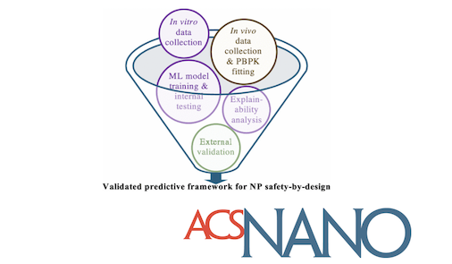
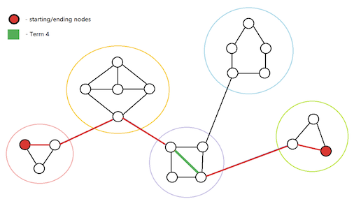
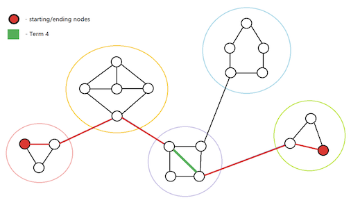

Predicting Nanoparticle Toxicity Through Machine Learning-Based Models
Research Field: Machine Learning
Role: Research Intern, Summer Undergraduate Research Internship
Affiliation: Houston Methodist Research Institute
Location: Houston, TX
Tools Used: Python, Scikit-learn, PBPK Modeling, Statistical Analysis
- Developed explainable machine learning framework to predict inorganic nanoparticle toxicity using physicochemical properties and exposure data.
- Integrated physiologically based pharmacokinetic (PBPK) modeling to enable organ-specific toxicity assessment.
- Published findings in ACS Nano (2025) with significant implications for safer nanoparticle engineering.

Read Abstract

 
